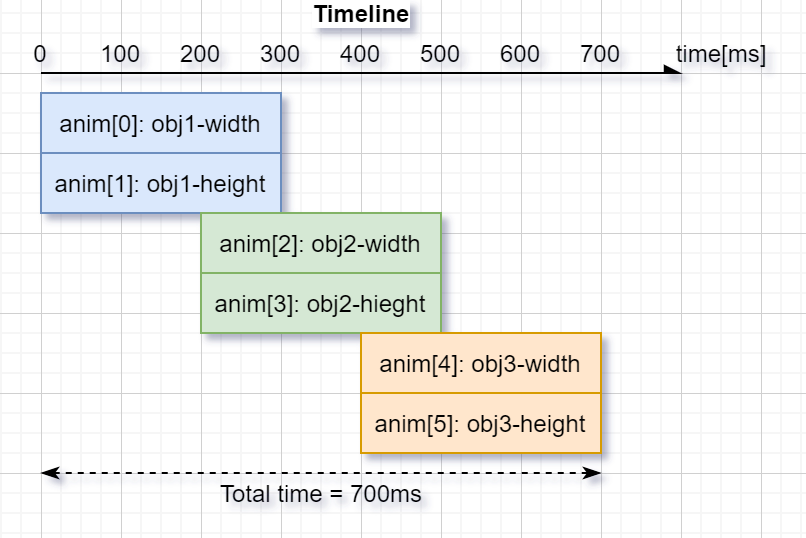

Animations（动画）¶
查看原文
You can automatically change the value of a variable between a start and an end value using animations. The animation will happen by periodically calling an "animator" function with the corresponding value parameter.
The animator functions have the following prototype:
您可以使用动画在开始值和结束值之间自动更改变量的值。 动画将通过使用相应的 value 参数定期调用 “animator” 函数来发生。
animator 函数具有以下原型：
void func(void * var, lv_anim_var_t value);
查看原文
This prototype is compatible with the majority of the set functions of LVGL. For example lv_obj_set_x(obj, value) or lv_obj_set_width(obj, value)
该原型与 LVGL 的大多数 set 函数兼容。例如lv_obj_set_x(obj, value) 或lv_obj_set_width(obj, value)
Create an animation（创建动画）¶
查看原文
To create an animation an lv_anim_t variable has to be initialized and configured with lv_anim_set_...() functions.
要创建动画，必须使用 lv_anim_set_...() 函数初始化和配置 lv_anim_t 变量。
/* INITIALIZE AN ANIMATION
*-----------------------*/
lv_anim_t a;
lv_anim_init(&a);
/* MANDATORY SETTINGS
*------------------*/
/*Set the "animator" function*/
lv_anim_set_exec_cb(&a, (lv_anim_exec_xcb_t) lv_obj_set_x);
/*Set the "animator" function*/
lv_anim_set_var(&a, obj);
/*Length of the animation [ms]*/
lv_anim_set_time(&a, duration);
/*Set start and end values. E.g. 0, 150*/
lv_anim_set_values(&a, start, end);
/* OPTIONAL SETTINGS
*------------------*/
/*Time to wait before starting the animation [ms]*/
lv_anim_set_delay(&a, delay);
/*Set path (curve). Default is linear*/
lv_anim_set_path(&a, lv_anim_path_ease_in);
/*Set a callback to call when animation is ready.*/
lv_anim_set_ready_cb(&a, ready_cb);
/*Set a callback to call when animation is started (after delay).*/
lv_anim_set_start_cb(&a, start_cb);
/*Play the animation backward too with this duration. Default is 0 (disabled) [ms]*/
lv_anim_set_playback_time(&a, wait_time);
/*Delay before playback. Default is 0 (disabled) [ms]*/
lv_anim_set_playback_delay(&a, wait_time);
/*Number of repetitions. Default is 1. LV_ANIM_REPEAT_INFINIT for infinite repetition*/
lv_anim_set_repeat_count(&a, wait_time);
/*Delay before repeat. Default is 0 (disabled) [ms]*/
lv_anim_set_repeat_delay(&a, wait_time);
/*true (default): apply the start vale immediately, false: apply start vale after delay when then anim. really starts. */
lv_anim_set_early_apply(&a, true/false);
/* START THE ANIMATION
*------------------*/
lv_anim_start(&a); /*Start the animation*/
查看原文
You can apply multiple different animations on the same variable at the same time.
For example, animate the x and y coordinates with lv_obj_set_x and lv_obj_set_y. However, only one animation can exist with a given variable and function pair.
Therefore lv_anim_start() will delete the already existing variable-function animations.
您可以同时对同一个变量应用多个不同的动画。
例如，使用 lv_obj_set_x 和 lv_obj_set_y 为 x 和 y 坐标设置动画。但是，对于给定的变量和函数对，只能存在一个动画。
因此lv_anim_start() 将删除已经存在的可变函数动画。
Animation path（动画轨迹）¶
查看原文
You can determinate the path of animation. The most simple case is linear, meaning the current value between start and end is changed with fixed steps. A path is a function which calculates the next value to set based on the current state of the animation. Currently, there are the following built-in paths functions:
lv_anim_path_linearlinear animationlv_anim_path_stepchange in one step at the endlv_anim_path_ease_inslow at the beginninglv_anim_path_ease_outslow at the endlv_anim_path_ease_in_outslow at the beginning and at the endlv_anim_path_overshootovershoot the end valuelv_anim_path_bouncebounce back a little from the end value (like hitting a wall)
您可以确定动画的路径。最简单的情况是线性的，这意味着 start 和 end 之间的当前值以固定步长变化。 path 是一个函数，它根据动画的当前状态计算要设置的下一个值。目前，有以下内置路径函数：
lv_anim_path_linear线性动画lv_anim_path_step最后一步改变lv_anim_path_ease_in开始时很慢lv_anim_path_ease_out最后慢lv_anim_path_ease_in_out开始和结束都很慢lv_anim_path_overshoot超过结束值lv_anim_path_bounce从最终值反弹一点（比如撞墙）
Speed vs time（速度与时间）¶
查看原文
By default, you set the animation time. But in some cases, setting the animation speed is more practical.
The lv_anim_speed_to_time(speed, start, end) function calculates the required time in milliseconds to reach the end value from a start value with the given speed.
The speed is interpreted in unit/sec dimension. For example, lv_anim_speed_to_time(20,0,100) will yield 5000 milliseconds. For example, in case of lv_obj_set_x unit is pixels so 20 means 20 px/sec speed.
默认情况下，您设置动画时间。但在某些情况下，设置动画速度更实用。
lv_anim_speed_to_time(speed, start, end) 函数计算从给定速度的起始值到达结束值所需的时间（以毫秒为单位）。
速度以 unit/sec 维度解释。例如，lv_anim_speed_to_time(20,0,100) 将产生 5000 毫秒。例如，在 lv_obj_set_x 的情况下 unit 是像素，所以 20 意味着 20 px/sec 速度。
Delete animations（删除动画）¶
查看原文
You can delete an animation with lv_anim_del(var, func) if you provide the animated variable and its animator function.
如果您提供动画变量及其动画器函数，您可以使用 lv_anim_del(var, func) 删除动画。
Timeline（时间线）¶
查看原文
Timeline is a collection of multiple Animations, which makes it easy to create complex composite animations.
Firstly, create the animation element, but don’t call lv_anim_start().
Secondly, create an animation timeline object, by calling lv_anim_timeline_create().
Thirdly, add animation elements to the animation timeline, by calling lv_anim_timeline_add(at, start_time, &a). start_time is the start time of the animation on the timeline. Note that start_time will override the value of delay.
Finally, call lv_anim_timeline_start(at) to start the animation timeline.
时间线是多个动画的集合，可以轻松创建复杂的复合动画。
首先，创建动画元素，但不要调用lv_anim_start()。
其次，通过调用lv_anim_timeline_create()创建一个动画时间线对象。
第三，通过调用lv_anim_timeline_add(at, start_time, &a)将动画元素添加到动画时间线。 start_time 是时间线上动画的开始时间。请注意，start_time 将覆盖 delay 的值。
最后，调用lv_anim_timeline_start(at)启动动画时间线。
查看原文
It supports forward and backward playback of the entire animation group, using lv_anim_timeline_set_reverse(at, reverse).
Call the lv_anim_timeline_set_progress(at, progress) function to set the state of the object corresponding to the progress of the timeline.
Call the lv_anim_timeline_get_playtime(at) function to get the total duration of the entire animation timeline.
Call the lv_anim_timeline_get_reverse(at) function to get whether to reverse the animation timeline.
Call the lv_anim_timeline_del(at) function to delete the animation timeline.
它支持整个动画组的向前和向后播放，使用lv_anim_timeline_set_reverse(at, reverse)。
调用lv_anim_timeline_set_progress(at,progress)函数设置时间线进度对应的对象状态。
调用lv_anim_timeline_get_playtime(at)函数获取整个动画时间线的总时长。
调用lv_anim_timeline_get_reverse(at)函数获取是否反转动画时间线。
调用lv_anim_timeline_del(at)函数删除动画时间线。

Examples¶
API¶
Typedefs
-
typedef int32_t (*lv_anim_path_cb_t)(const struct _lv_anim_t*)¶
Get the current value during an animation
-
typedef void (*lv_anim_exec_xcb_t)(void*, int32_t)¶
Generic prototype of "animator" functions. First parameter is the variable to animate. Second parameter is the value to set. Compatible with
lv_xxx_set_yyy(obj, value)functions Thexin_xcb_tmeans its not a fully generic prototype because it doesn't receivelv_anim_t *as its first argument
-
typedef void (*lv_anim_custom_exec_cb_t)(struct _lv_anim_t*, int32_t)¶
Same as
lv_anim_exec_xcb_tbut receiveslv_anim_t *as the first parameter. It's more consistent but less convenient. Might be used by binding generator functions.
-
typedef void (*lv_anim_ready_cb_t)(struct _lv_anim_t*)¶
Callback to call when the animation is ready
-
typedef void (*lv_anim_start_cb_t)(struct _lv_anim_t*)¶
Callback to call when the animation really stars (considering
delay)
-
typedef int32_t (*lv_anim_get_value_cb_t)(struct _lv_anim_t*)¶
Callback used when the animation values are relative to get the current value
-
typedef struct _lv_anim_t lv_anim_t¶
Describes an animation
Enums
Functions
-
LV_EXPORT_CONST_INT(LV_ANIM_REPEAT_INFINITE)¶
-
void _lv_anim_core_init(void)¶
Init. the animation module
-
void lv_anim_init(lv_anim_t *a)¶
Initialize an animation variable. E.g.: lv_anim_t a; lv_anim_init(&a); lv_anim_set_...(&a);
- 参数
a -- pointer to an
lv_anim_tvariable to initialize
-
static inline void lv_anim_set_var(lv_anim_t *a, void *var)¶
Set a variable to animate
- 参数
a -- pointer to an initialized
lv_anim_tvariablevar -- pointer to a variable to animate
-
static inline void lv_anim_set_exec_cb(lv_anim_t *a, lv_anim_exec_xcb_t exec_cb)¶
Set a function to animate
var- 参数
a -- pointer to an initialized
lv_anim_tvariableexec_cb -- a function to execute during animation LittelvGL's built-in functions can be used. E.g. lv_obj_set_x
-
static inline void lv_anim_set_time(lv_anim_t *a, uint32_t duration)¶
Set the duration of an animation
- 参数
a -- pointer to an initialized
lv_anim_tvariableduration -- duration of the animation in milliseconds
-
static inline void lv_anim_set_delay(lv_anim_t *a, uint32_t delay)¶
Set a delay before starting the animation
- 参数
a -- pointer to an initialized
lv_anim_tvariabledelay -- delay before the animation in milliseconds
-
static inline void lv_anim_set_values(lv_anim_t *a, int32_t start, int32_t end)¶
Set the start and end values of an animation
- 参数
a -- pointer to an initialized
lv_anim_tvariablestart -- the start value
end -- the end value
-
static inline void lv_anim_set_custom_exec_cb(lv_anim_t *a, lv_anim_custom_exec_cb_t exec_cb)¶
Similar to
lv_anim_set_exec_cbbutlv_anim_custom_exec_cb_treceiveslv_anim_t *as its first parameter instead ofvoid *. This function might be used when LVGL is binded to other languages because it's more consistent to havelv_anim_t *as first parameter. The variable to animate can be stored in the animation'suser_sata- 参数
a -- pointer to an initialized
lv_anim_tvariableexec_cb -- a function to execute.
-
static inline void lv_anim_set_path_cb(lv_anim_t *a, lv_anim_path_cb_t path_cb)¶
Set the path (curve) of the animation.
- 参数
a -- pointer to an initialized
lv_anim_tvariablepath_cb -- a function the get the current value of the animation.
-
static inline void lv_anim_set_start_cb(lv_anim_t *a, lv_anim_ready_cb_t start_cb)¶
Set a function call when the animation really starts (considering
delay)- 参数
a -- pointer to an initialized
lv_anim_tvariablestart_cb -- a function call when the animation starts
-
static inline void lv_anim_set_get_value_cb(lv_anim_t *a, lv_anim_get_value_cb_t get_value_cb)¶
Set a function to use the current value of the variable and make start and end value relative the the returned current value.
- 参数
a -- pointer to an initialized
lv_anim_tvariableget_value_cb -- a function call when the animation starts
-
static inline void lv_anim_set_ready_cb(lv_anim_t *a, lv_anim_ready_cb_t ready_cb)¶
Set a function call when the animation is ready
- 参数
a -- pointer to an initialized
lv_anim_tvariableready_cb -- a function call when the animation is ready
-
static inline void lv_anim_set_playback_time(lv_anim_t *a, uint32_t time)¶
Make the animation to play back to when the forward direction is ready
- 参数
a -- pointer to an initialized
lv_anim_tvariabletime -- the duration of the playback animation in in milliseconds. 0: disable playback
-
static inline void lv_anim_set_playback_delay(lv_anim_t *a, uint32_t delay)¶
Make the animation to play back to when the forward direction is ready
- 参数
a -- pointer to an initialized
lv_anim_tvariabledelay -- delay in milliseconds before starting the playback animation.
-
static inline void lv_anim_set_repeat_count(lv_anim_t *a, uint16_t cnt)¶
Make the animation repeat itself.
- 参数
a -- pointer to an initialized
lv_anim_tvariablecnt -- repeat count or
LV_ANIM_REPEAT_INFINITEfor infinite repetition. 0: to disable repetition.
-
static inline void lv_anim_set_repeat_delay(lv_anim_t *a, uint32_t delay)¶
Set a delay before repeating the animation.
- 参数
a -- pointer to an initialized
lv_anim_tvariabledelay -- delay in milliseconds before repeating the animation.
-
static inline void lv_anim_set_early_apply(lv_anim_t *a, bool en)¶
Set a whether the animation's should be applied immediately or only when the delay expired.
- 参数
a -- pointer to an initialized
lv_anim_tvariableen -- true: apply the start value immediately in
lv_anim_start; false: apply the start value only whendelayms is elapsed and the animations really starts
-
void lv_anim_start(lv_anim_t *a)¶
Create an animation
- 参数
a -- an initialized 'anim_t' variable. Not required after call.
-
static inline uint32_t lv_anim_get_delay(lv_anim_t *a)¶
Get a delay before starting the animation
- 参数
a -- pointer to an initialized
lv_anim_tvariable- 返回
delay before the animation in milliseconds
-
bool lv_anim_del(void *var, lv_anim_exec_xcb_t exec_cb)¶
Delete an animation of a variable with a given animator function
- 参数
var -- pointer to variable
exec_cb -- a function pointer which is animating 'var', or NULL to ignore it and delete all the animations of 'var
- 返回
true: at least 1 animation is deleted, false: no animation is deleted
-
void lv_anim_del_all(void)¶
Delete all the animations animation
-
lv_anim_t *lv_anim_get(void *var, lv_anim_exec_xcb_t exec_cb)¶
Get the animation of a variable and its
exec_cb.- 参数
var -- pointer to variable
exec_cb -- a function pointer which is animating 'var', or NULL to delete all the animations of 'var'
- 返回
pointer to the animation.
-
static inline bool lv_anim_custom_del(lv_anim_t *a, lv_anim_custom_exec_cb_t exec_cb)¶
Delete an animation by getting the animated variable from
a. Only animations withexec_cbwill be deleted. This function exists because it's logical that all anim. functions receives anlv_anim_tas their first parameter. It's not practical in C but might make the API more consequent and makes easier to generate bindings.- 参数
a -- pointer to an animation.
exec_cb -- a function pointer which is animating 'var', or NULL to ignore it and delete all the animations of 'var
- 返回
true: at least 1 animation is deleted, false: no animation is deleted
-
uint16_t lv_anim_count_running(void)¶
Get the number of currently running animations
- 返回
the number of running animations
-
uint32_t lv_anim_speed_to_time(uint32_t speed, int32_t start, int32_t end)¶
Calculate the time of an animation with a given speed and the start and end values
- 参数
speed -- speed of animation in unit/sec
start -- start value of the animation
end -- end value of the animation
- 返回
the required time [ms] for the animation with the given parameters
-
void lv_anim_refr_now(void)¶
Manually refresh the state of the animations. Useful to make the animations running in a blocking process where
lv_timer_handlercan't run for a while. Shouldn't be used directly because it is called inlv_refr_now().
-
int32_t lv_anim_path_linear(const lv_anim_t *a)¶
Calculate the current value of an animation applying linear characteristic
- 参数
a -- pointer to an animation
- 返回
the current value to set
-
int32_t lv_anim_path_ease_in(const lv_anim_t *a)¶
Calculate the current value of an animation slowing down the start phase
- 参数
a -- pointer to an animation
- 返回
the current value to set
-
int32_t lv_anim_path_ease_out(const lv_anim_t *a)¶
Calculate the current value of an animation slowing down the end phase
- 参数
a -- pointer to an animation
- 返回
the current value to set
-
int32_t lv_anim_path_ease_in_out(const lv_anim_t *a)¶
Calculate the current value of an animation applying an "S" characteristic (cosine)
- 参数
a -- pointer to an animation
- 返回
the current value to set
-
int32_t lv_anim_path_overshoot(const lv_anim_t *a)¶
Calculate the current value of an animation with overshoot at the end
- 参数
a -- pointer to an animation
- 返回
the current value to set
-
struct _lv_anim_t¶
- #include <lv_anim.h>
Describes an animation
Public Members
-
void *var¶
Variable to animate
-
lv_anim_exec_xcb_t exec_cb¶
Function to execute to animate
-
lv_anim_start_cb_t start_cb¶
Call it when the animation is starts (considering
delay)
-
lv_anim_ready_cb_t ready_cb¶
Call it when the animation is ready
-
lv_anim_get_value_cb_t get_value_cb¶
Get the current value in relative mode
-
void *user_data¶
Custom user data
-
lv_anim_path_cb_t path_cb¶
Describe the path (curve) of animations
-
int32_t start_value¶
Start value
-
int32_t current_value¶
Current value
-
int32_t end_value¶
End value
-
int32_t time¶
Animation time in ms
-
int32_t act_time¶
Current time in animation. Set to negative to make delay.
-
uint32_t playback_delay¶
Wait before play back
-
uint32_t playback_time¶
Duration of playback animation
-
uint32_t repeat_delay¶
Wait before repeat
-
uint16_t repeat_cnt¶
Repeat count for the animation
-
uint8_t early_apply¶
1: Apply start value immediately even is there is
delay
-
uint8_t playback_now¶
Play back is in progress
-
uint8_t run_round¶
Indicates the animation has run in this round
-
uint8_t start_cb_called¶
Indicates that the
start_cbwas already called
-
uint32_t time_orig¶
-
void *var¶